Novidades
Do anúncio da data à reunião com os voluntários: como o Alegrete Summit 2026 foi construído, e o que ficou da edição de 2025.
Linha do tempo
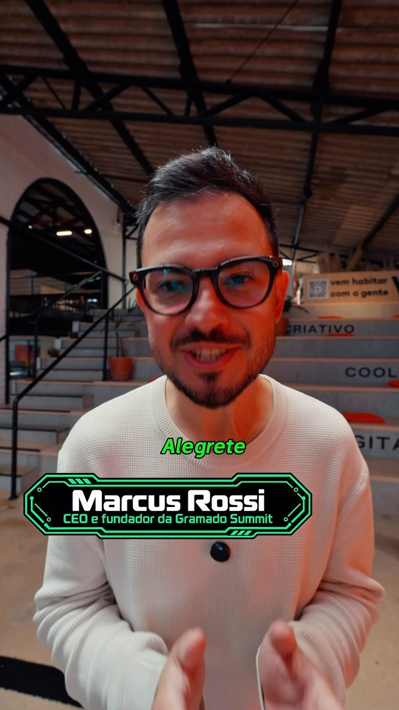
E se a inovação começasse pelas pessoas?
Marcus Rossi, CEO e fundador da Gramado Summit, gravou um convite para a palestra Inovação Humanizada. Na mesma semana, o Palco Geek divulgou as 18 apresentações dos dois dias, e o Summit foi assunto na Rádio Minuano, com Cristina Aurélio, Fernando Camargo Fernandes e Vitor Almada.
Ver no InstagramInova RS reforça o convite
Cristina Aurélio, gestora de inovação no Inova RS, convida para o Summit como espaço de conexão entre universidades, empresas, poder público e sociedade. A certificação será de 24 horas, mediante participação.
Ver no Instagram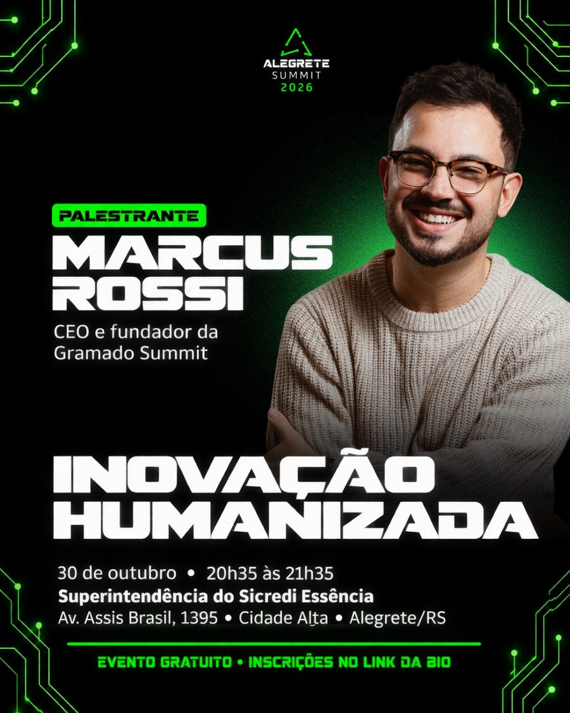
Palestrantes do palco principal anunciados
Émerson Oliveira Rizzatti (a China vista de perto), Evandro e Sandro Salles (Contact Pró), Marcus Rossi (Inovação Humanizada), a oficina de vídeo com Anita Rizzatti e o painel Onde estamos?, com lideranças do poder público, das universidades, das empresas e do cooperativismo.
Ver no Instagram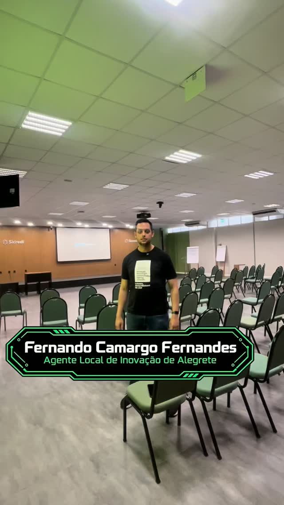
Sebrae e Agente Local de Inovação
Márcio Eduardo da Silva, analista de inovação do Sebrae Campanha e Fronteira Oeste, e Fernando Camargo Fernandes, Agente Local de Inovação de Alegrete, convidam a comunidade.
Ver no Instagram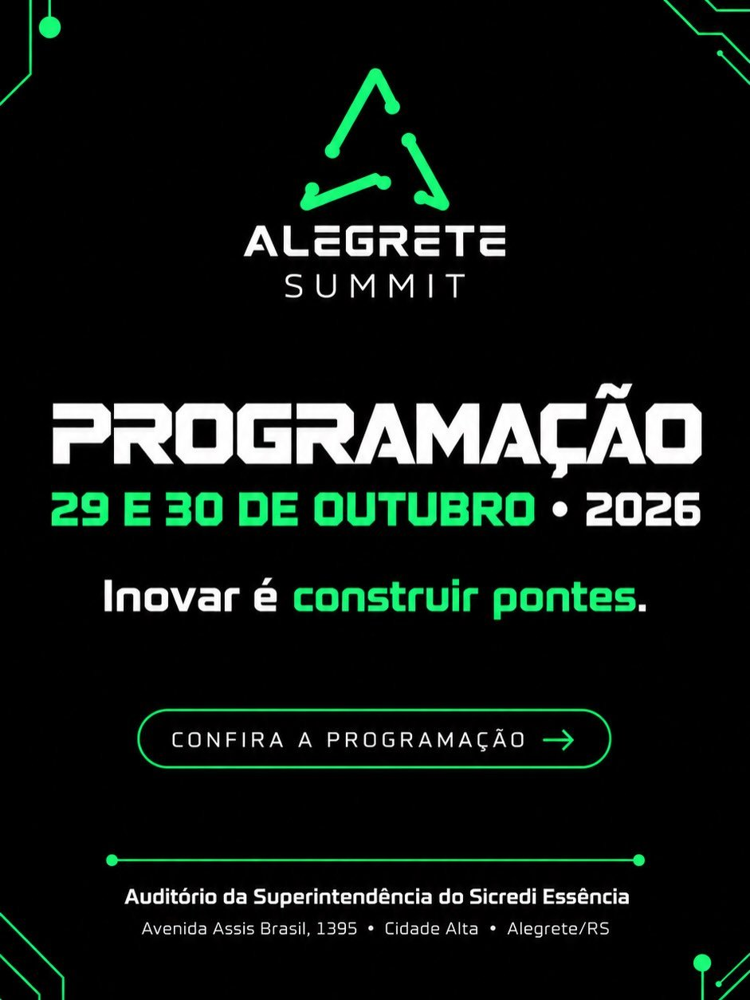
A programação está no ar
Palestras, diálogos, Mostra Tecnológica, Palco Geek, Ideathon e experiências de inovação, empreendedorismo e criatividade.
Ver a programação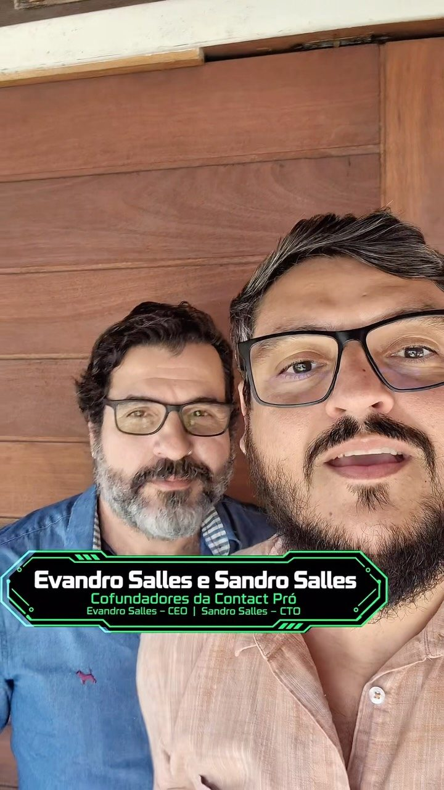
Da escassez ao estado da arte
Os irmãos Evandro e Sandro Salles contam 11 anos de empreendedorismo, da construção de uma empresa brasileira de tecnologia ao desenvolvimento de soluções com inteligência artificial.
Ver no Instagram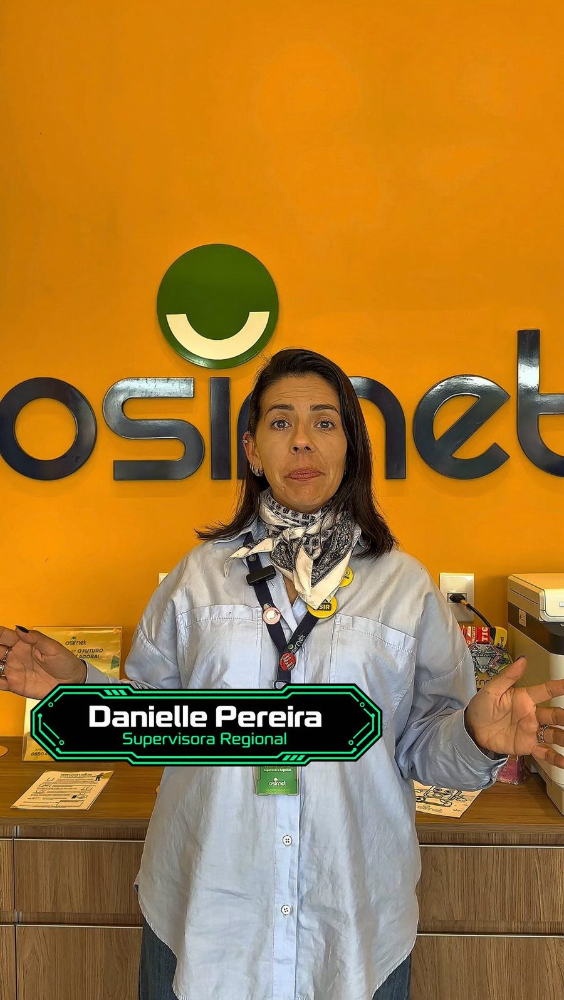
OSIRNET patrocina; SEDETUR convida
A OSIRNET entra como patrocinadora. Paulo Vargas, diretor de Inovação e Tecnologia da SEDETUR, reforça o convite para fortalecer o ecossistema de Alegrete e da Fronteira Oeste.
Ver no Instagram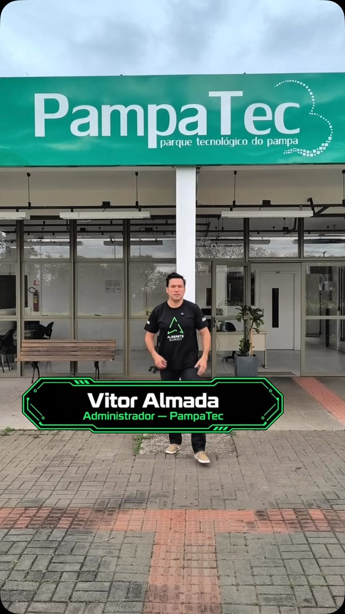
Pré-inscrições abertas e Mostra Tecnológica
Abertas as pré-inscrições, que registram os dados para o certificado. Vitor Almada, do PampaTec, assume a Mostra Tecnológica: robótica, inteligência artificial, impressão 3D e outras experiências.
Ver no Instagram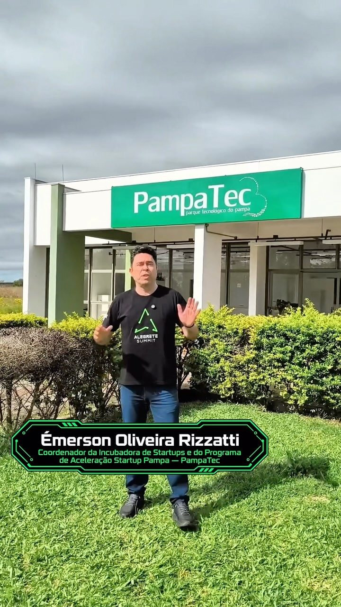
O que a China pode ensinar ao Pampa?
Émerson Oliveira Rizzatti, coordenador da Incubadora de Startups e do Programa de Aceleração Startup Pampa, é confirmado como palestrante.
Ver no Instagram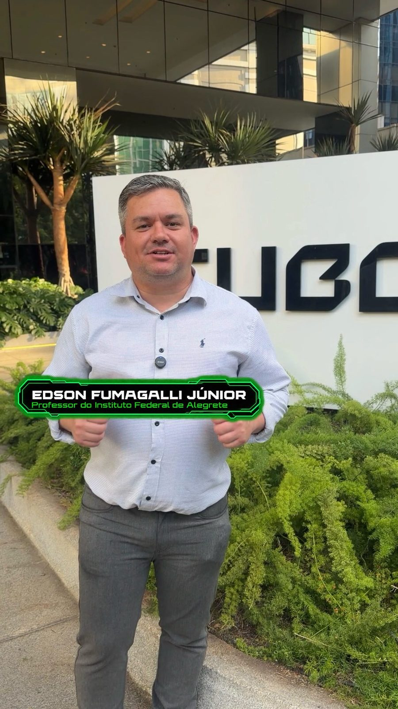
Sicredi patrocina; IFFar traz o Bye Bye Boss
O Sicredi é patrocinador e sede do evento. O Instituto Federal Farroupilha traz o Bye Bye Boss: 13 equipes, ideias de Edutech e de inovação tradicional, três premiadas.
Ver no Instagram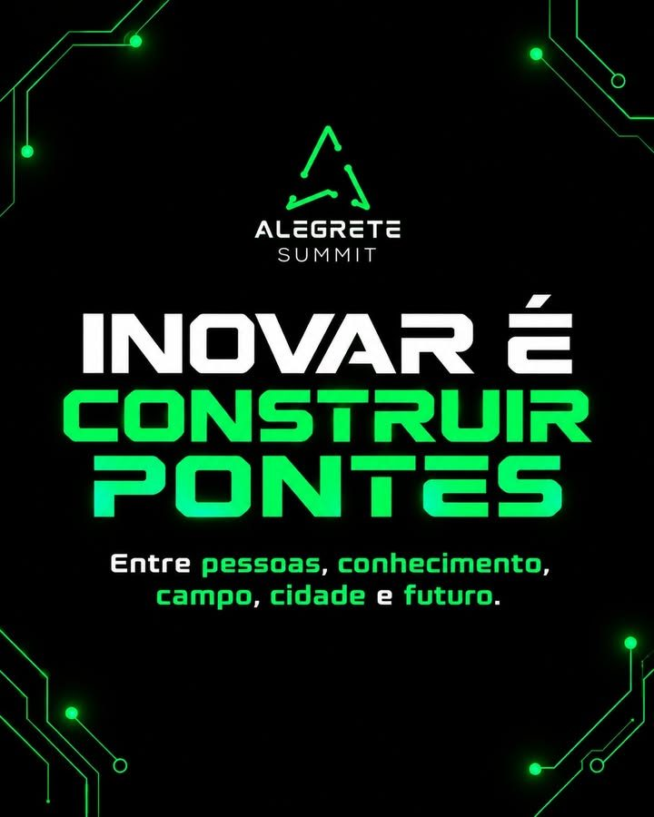
O tema: inovar é construir pontes
Pontes entre quem produz e quem pesquisa, entre quem empreende e quem investe, entre o campo e a cidade, entre o conhecimento e as oportunidades, entre o presente e o futuro.
Ver no Instagram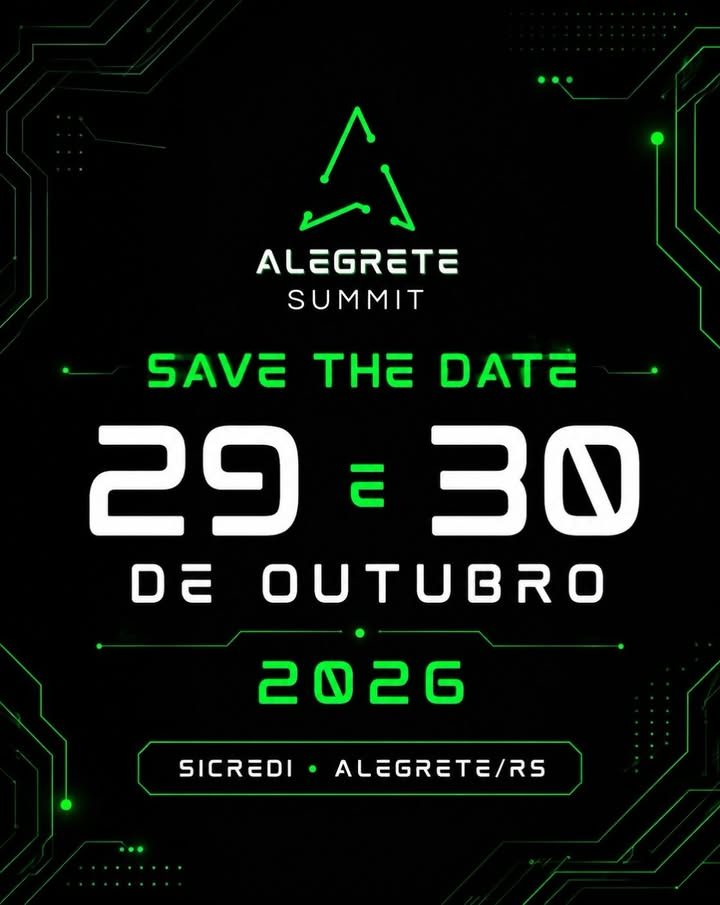
Data marcada e chamada para patrocinadores
O Alegrete Summit 2026 anuncia os dias 29 e 30 de outubro, no Sicredi, e abre a captação de empresas parceiras. Antes disso, em 8 de setembro, o ecossistema se reuniu para dar o primeiro passo na construção do evento.
Ver no Instagram
37 pessoas, 14 municípios, as quatro hélices
Poder público, empresas, academia e sociedade civil viajaram juntos para uma imersão em ciência, tecnologia e empreendedorismo. Alegrete foi representada por Jéssica Luz e Edson Fumagalli.
No CPQD, no CNPEM/Sirius, na IMATech, no InovaUSP, no Cubo e no Inovabra, a comitiva discutiu:
- Inteligência artificial aplicada à gestão pública e aos negócios, com processos organizados e supervisão humana.
- Uso de dados e indicadores para apoiar decisões e melhorar os serviços municipais.
- Conexão entre pesquisa científica e empreendedorismo, com apoio a startups e acesso a laboratórios.
- Inovação aberta e parcerias entre universidades, empresas e poder público.
- Comunidades que aproximam talentos, desafios e oportunidades.
Esses temas inspiram o especial sobre IA e ecossistemas de inovação.
Alegrete Summit 2025
A edição de 2025 mostrou o que acontece quando o conhecimento encontra oportunidades: conhecimento compartilhado, projetos apresentados, novas conexões e muita inovação acontecendo diante dos nossos olhos. Mais do que um evento, um movimento que aproxima pessoas, empresas e instituições.
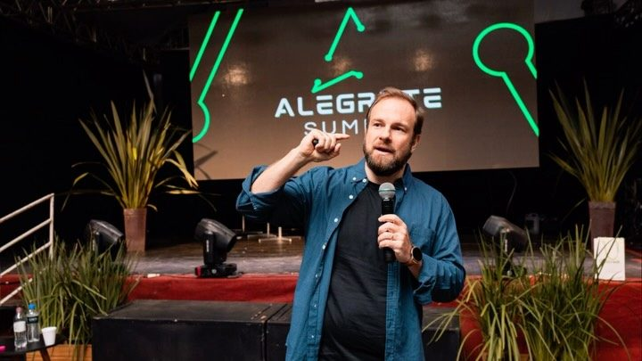
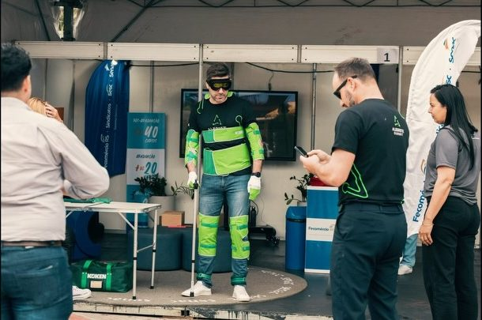
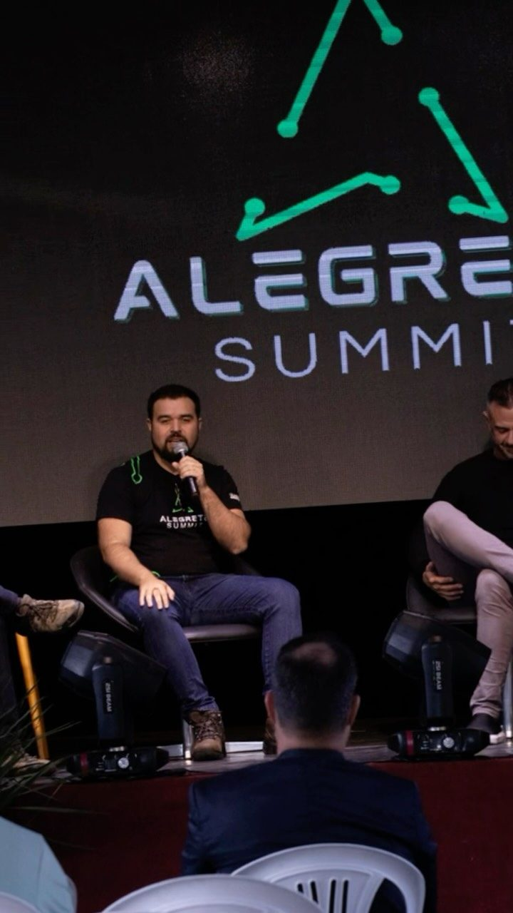
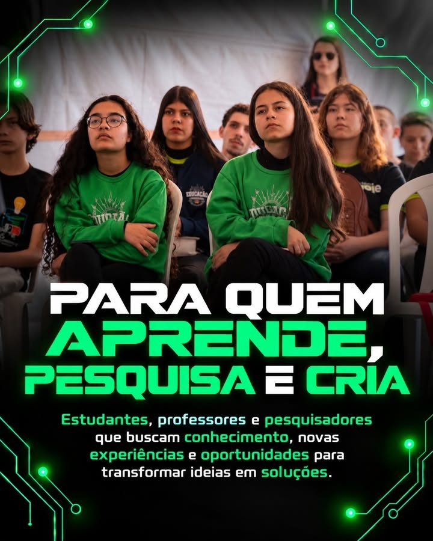
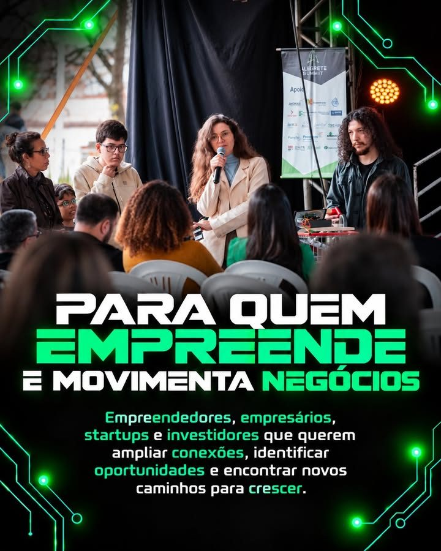
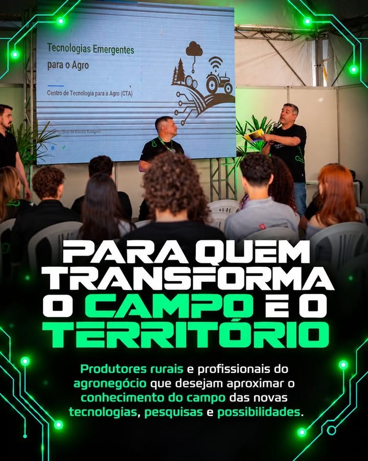
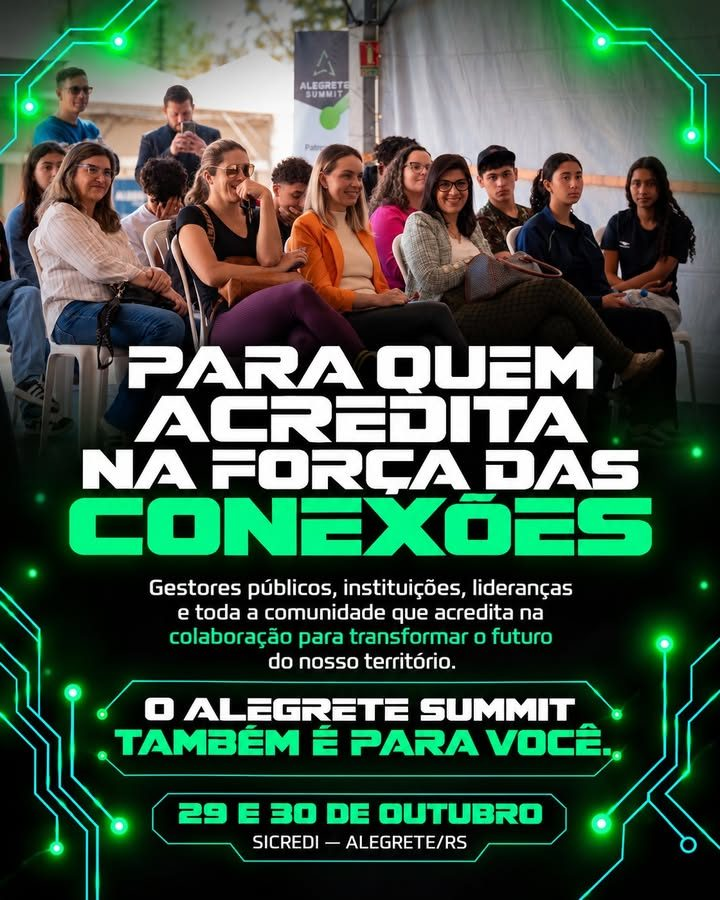